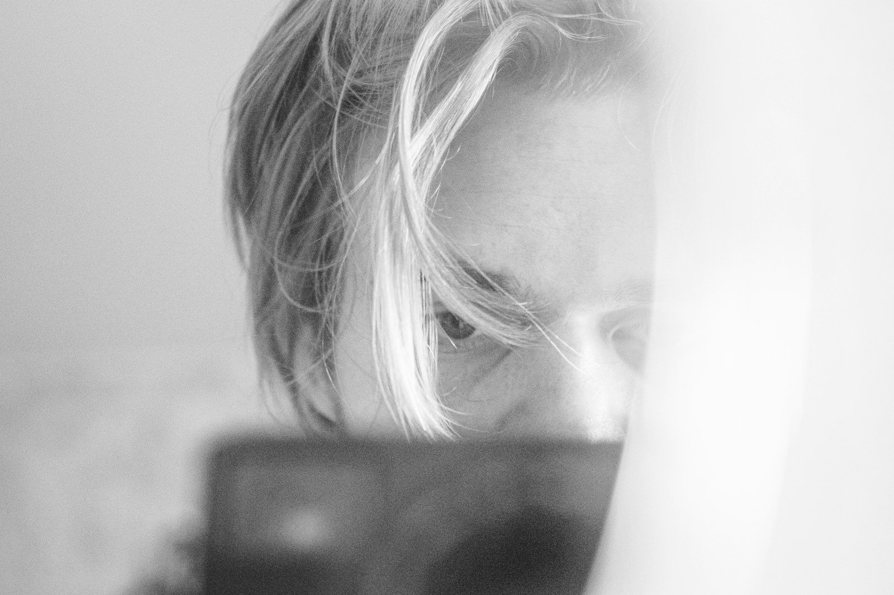

Studio Marea segue negozi, botteghe e professionisti della città dal primo post al sito. Ascoltiamo la vostra storia, la mettiamo in ordine e la trasformiamo in contenuti che portano persone vere in negozio, con un piano chiaro ogni mese e numeri che vi mostriamo senza giri di parole.